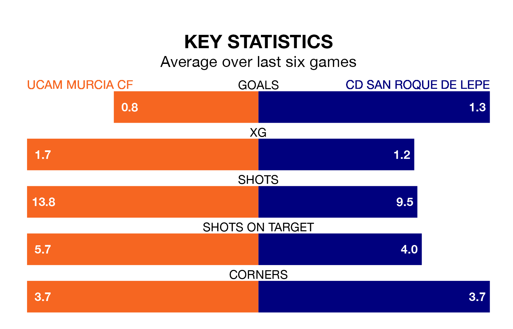

UCAM Murcia CF host CD San Roque de Lepe on Sunday at Estadio de La Condomina in the Segunda División RFEF Group 4.
In their last league match, on April 14, UCAM Murcia lost to Racing Cartagena MM 2-1 away, with their goal scored by Arturo Juan Rodríguez Pérez-Reverte.
San Roque de Lepe won, 1-0 at home against Vélez, with Sergio García Blanco scoring their goals.
In the last 10 years, UCAM Murcia and San Roque de Lepe have played each other on seven occasions. They won one each, and they drew five times.
On average, UCAM Murcia scored 1.0 goal and San Roque de Lepe 1.3 in those matches.
Their last meeting was on December 10, when San Roque de Lepe won 3-0 at home.
With 30 goals in 31 games so far this season, UCAM Murcia are scoring at the league's average rate with 1.0 goals per game. But they are conceding at an average rate too, letting in 32 goals at a rate of 1.0 per game.
San Roque de Lepe, meanwhile, are above average scorers, with 1.1 goals per game. They have also conceded 1.1 goals per game.
The away side are 13th in the table after 31 games, of which they have won 10 and drawn seven, earning 37 points.
The hosts are five places ahead of San Roque de Lepe in eighth, with 11 wins and eight draws putting them on 41 points.
UCAM Murcia are in mixed form in the Segunda División RFEF Group 4, with two wins and two draws from their last six games.
With three wins and a draw over that period, San Roque de Lepe's form is slightly better – they have taken 10 points from 18, compared to UCAM Murcia's eight.
Updated: 15:40 (UTC), 18/04/24